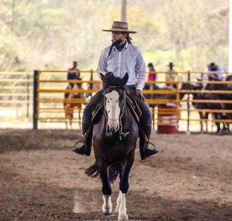

MEU BLOG TECH
meu primeiro post
Sejam bem vindos ao meu novo blog! Aqui irei fala sobre uma das melhores lacadoras e irei compartilhar alguma curiosidades.
Ariane Soares e uma renomada lacadora gaucha e um dos maiores nomes nacionais do laco comprido. Vinda de uma familia tradicional do esporte, ela e filha do lendario lacador "Tio Beto". Ariane viaja o pais competindo profissionalmente e colecionando titulos importantes nos rodeios brasileiros, como o campeonato na categoria Prenda Forca A.
"alt="fotos que tirei deurante um rodeio crioulo! Irei compartilhar fotos durante meu dia.jpeg)
